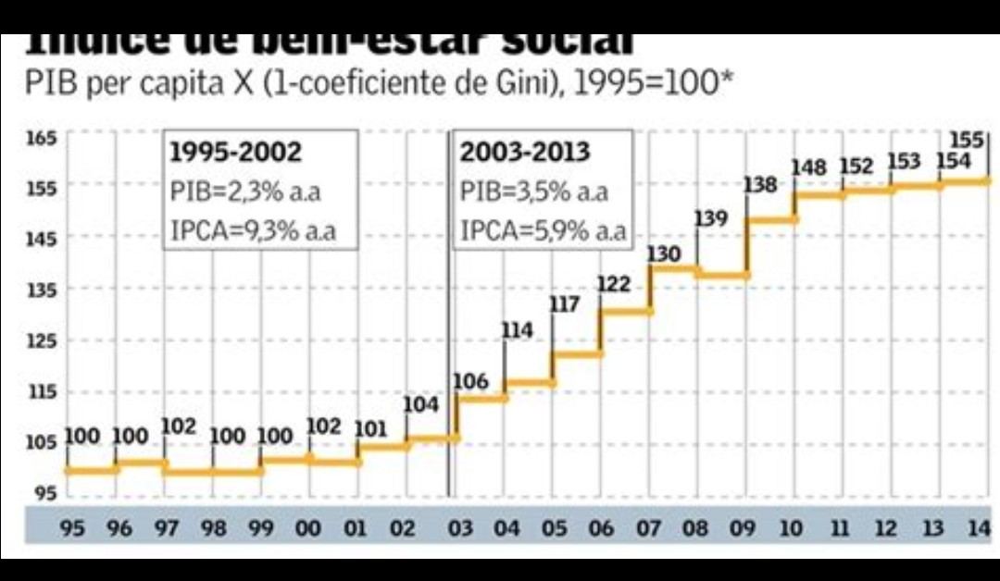

Publicado em 2025-05-10 16:19:22
Dizem-nos que vivemos num Estado Social moderno. Que a Segurança Social ampara os frágeis, que o SNS trata todos com dignidade, que a educação é gratuita e universal.
Mas o que não nos dizem — e o que é urgente dizer — é que esse mesmo Estado:
O "sistema" diz que está falido.
Mas continua a sustentar:
Enquanto isso, um idoso com 400 euros de pensão espera 3 meses por uma consulta de reumatologia.
E um jovem com contrato a prazo paga 11% para um futuro que nunca chega.
Porque este Estado Social disfarça um sistema feudal moderno, onde a corte política vive à custa dos vassalos contribuidores.
Os que nada têm recebem migalhas.
Os que tudo têm escapam entre buracos legais.
E os do meio — os que pagam tudo — são os novos servos da gleba.
Porque um sistema que não serve o seu povo não é social — é apenas mais uma engrenagem da miséria organizada.
Por Augustus Veritas Lumen in May2025